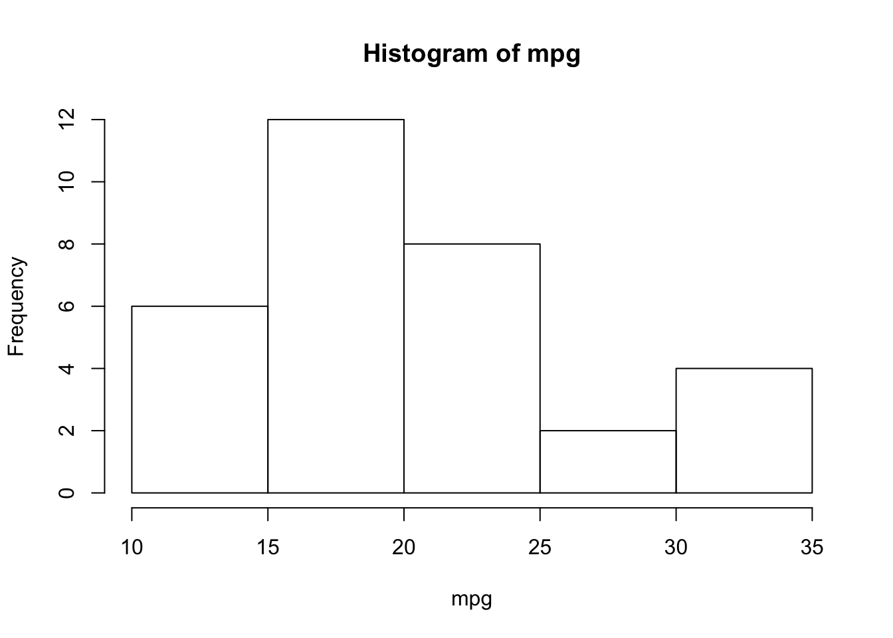
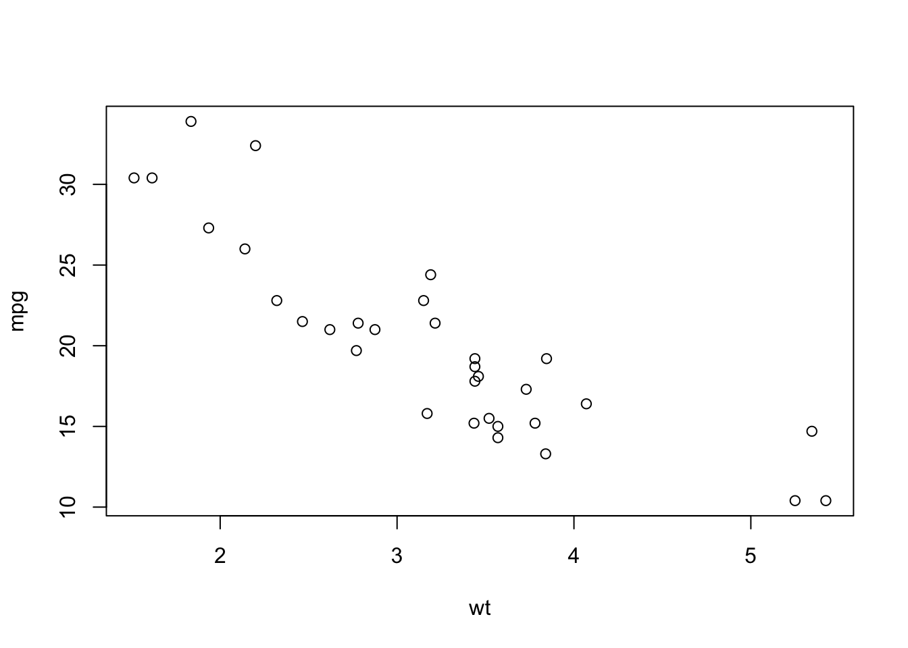

Chapter 6 Descriptive statistics
6.1 Data used
Basic functions for graphics and descriptive statistics will be illustrated using the mtcars dataset available in R. For a description of this dataset, see the help: ?mtcars. We can also get an idea of the class and content of mtcars with str():
## 'data.frame': 32 obs. of 11 variables:
## $ mpg : num 21 21 22.8 21.4 18.7 18.1 14.3 24.4 22.8 19.2 ...
## $ cyl : num 6 6 4 6 8 6 8 4 4 6 ...
## $ disp: num 160 160 108 258 360 ...
## $ hp : num 110 110 93 110 175 105 245 62 95 123 ...
## $ drat: num 3.9 3.9 3.85 3.08 3.15 2.76 3.21 3.69 3.92 3.92 ...
## $ wt : num 2.62 2.88 2.32 3.21 3.44 ...
## $ qsec: num 16.5 17 18.6 19.4 17 ...
## $ vs : num 0 0 1 1 0 1 0 1 1 1 ...
## $ am : num 1 1 1 0 0 0 0 0 0 0 ...
## $ gear: num 4 4 4 3 3 3 3 4 4 4 ...
## $ carb: num 4 4 1 1 2 1 4 2 2 4 ...The variable cyl represents the number of cylinders with three possible modalities (4, 6 or 8), so it is natural to convert it into a factor:
6.2 Univariate analysis
6.2.1 Quantitative variables
For a quantitative variable, the basic statistics that can be calculated are the minimum, the maximum, the mean, the variance and the standard deviation, the median and the other quantiles (remember that the quantile of order \(p\) is the value \(q\) such that \(p\) is the proportion of observed values less than \(q\)).
Try the following commands
min(mpg)
max(mpg)
range(mpg)
mean(mpg)
var(mpg)
sd(mpg)
median(mpg)
quantile(mpg)
quantile(mpg, probs = 0.99) # for the 99th percentile
quantile(mpg, probs = c(0.01, 0.1, 0.9, 0.99))If the input vector contains missing data, we can exclude them from the statistic calculation using the option na.rm = TRUE.
The generic summary() function allows to quickly describe the distribution of a sample:
## Min. 1st Qu. Median Mean 3rd Qu. Max.
## 10.40 15.43 19.20 20.09 22.80 33.90An useful tool to show a sample distribution is the boxplot:
We recall that in a boxplot:
- The height (or length if we choose the option
horizontal = TRUE) of the box is defined by the first and third quartiles \(q_1\) and \(q_3\). - The horizontal segment corresponds to the median \(m = q_2\).
- The whisker at the bottom starts from \(q_1\) and goes down to the minimum of the sample if there are no extreme points on the left, ie values less than \(q_1-1.5\times (q_3-q_1)\). If there are extreme points on the left, the whisker stops precisely at the smallest point greater than the threshold \(q_1-1.5\times (q_3-q_1)\). In this case, we place the extreme points below the whisker.
- Similarly, the whisker at the top starts from \(q_3\) and goes up to the maximum of the sample if there are no extreme points on the right, ie values greater than \(q_3+1.5 \times(q_3-q_1)\). If there are extreme points on the right, the whisker stops at the greatest point less than the threshold \(q_3+1.5\times (q_3-q_1)\), and we place the extreme points above of it.
Try the following:
u <- c(mpg, 3.5, 2.7) # adding two very low values
boxplot(u)
q1 <- quantile(u, .25); q3 <- quantile(u, .75)
abline(h = median(u), col = 2, lwd = 2)
abline(h = q1, col = 2, lwd = 2); abline(h = q3, col = 2, lwd = 2)
abline(h = max(u), col = 3, lwd = 2)
# u[u < q1-1.5*(q3-q1)] # extreme points on the left
abline(h = min(u[u >= q1-1.5*(q3-q1)]), col = 3, lwd = 2)
abline(h = min(u), col = 4, lwd = 2)The other graphical tool to represent the distribution of a quantitative variable is the histogram:

# Try the following:
# hist (mtcars$mpg, breaks = 20) # if we want 20 + 1 intervals
# we specify by hand the points which define the intervals:
# hist (mtcars$mpg, breaks = c (10, 15, 18, 20, 22, 25, 35))By default the vertical axis gives the number of observations in each interval. If we want to plot the histogram in the density scale, we have to use the option freq = FALSE. In this case we recall that the proportion of observations in each interval is given by the area of the corresponding rectangle:
hist(mpg, freq = FALSE)
# relative frequency of observations in the [10,15] range:
# the area of the first rectangle is
# mean(10 <= mpg & mpg <= 15)
# to verify this, we divide the area by the base length and show
# that this is precisely the height of the rectangle:
abline(h = mean(10 <= mpg & mpg <= 15)/5, col = 2)We can also compare the distribution of the sample with the theoretical distribution of the standard normal distribution through a QQ-plot. This plot compare the empircal quantiles of the sample with the theoretical quantiles of the standard normal, if the observations in the sample were normally distributed than the points in the QQ-plot should be aligned along the bisector:
Remark. Compare the previous QQ-plot to that of the standardized sample:
What happened? Note that the distribution of quantiles did not change:
6.2.2 Qualitative variables
The summary() and table() functions applied to a factor (or a vector of characters) count the occurrences of the different levels.
## 4 6 8
## 11 7 14## cyl.factor
## 4 6 8
## 11 7 14To get the proportions:
## cyl.factor
## 4 6 8
## 0.34375 0.21875 0.43750If there are missing values, summary () also counts the NA:
## a b c NA's
## 2 1 2 1## x
## a b c
## 2 1 2## x
## a b c
## 0.4 0.2 0.4## a b c NA's
## 0.3333333 0.1666667 0.3333333 0.1666667We can use a bar plot or a pie chart (not recommended) to represent occurrences:
6.3 Bivariate analysis
6.3.1 Quantitative variable vs quantitative variable
We consider two quantitative variables measured on the same individuals.
For two quantitative variables, we can compute their covariance and linear correlation:
- the covariance measures the average joint deviation from the means of the two variables
- Pearson’s linear correlation coefficient \(\rho\) measures the intensity of linear dependence. \(\rho\) is comprised between \(-1\) and \(1\): its value is close to \(1\) (resp. \(-1\)) if there is a positive (resp. negative) linear dependence while its value is close to \(0\) if there is no linear dependence.
Another type of correlation is Spearman’s correlation measuring the linear correlation between the ranks of the values of the two variables:
To graphically represent two quantitative variables we will use a a scatter plot:

To find the least squares line (ie the linear model that best fits the data) and add it to the data:
##
## Call:
## lm(formula = mpg ~ wt)
##
## Residuals:
## Min 1Q Median 3Q Max
## -4.5432 -2.3647 -0.1252 1.4096 6.8727
##
## Coefficients:
## Estimate Std. Error t value Pr(>|t|)
## (Intercept) 37.2851 1.8776 19.858 < 2e-16 ***
## wt -5.3445 0.5591 -9.559 1.29e-10 ***
## ---
## Signif. codes: 0 '***' 0.001 '**' 0.01 '*' 0.05 '.' 0.1 ' ' 1
##
## Residual standard error: 3.046 on 30 degrees of freedom
## Multiple R-squared: 0.7528, Adjusted R-squared: 0.7446
## F-statistic: 91.38 on 1 and 30 DF, p-value: 1.294e-106.3.2 3.2 Qualitative variable vs qualitative variable
We consider two qualitative variables measured on the same individuals. For these variables, we can make contingency tables and calculate the total and marginal relative frequencies (in rows and columns). Try the following:
t <- table(cyl, am)
# cyl and am are digital vectors,
# but to build the contingency table
# table() counts their terms.
t
prop.table(t) # Prob(cyl, am)
prop.table(t, margin = 1) # P(am | cyl = 4), P(am | cyl = 6), P(am | cyl = 8)
prop.table(t, margin = 2) # P(cyl | am = 0), P(cyl | am = 1)The corresponding graphic is the mosaic plot:
6.3.3 Quantitative variable vs qualitative variable
To evaluate a function f on the values of a y for each level of a factor x we usetapply (X = y, INDEX = x, FUN = f). This is very useful when we want to calculate the statistics of a quantitative variable y grouped according to the levels of a qualitative variablex. To see this, try the following:
tapply(mtcars$mpg, mtcars$cyl, mean) # the average miles per gallon according to the number of cylinders
tapply(mtcars$mpg, mtcars$cyl, summary)Graphically, we can build the boxplot of the quantitative variable for each level of qualitative variable: